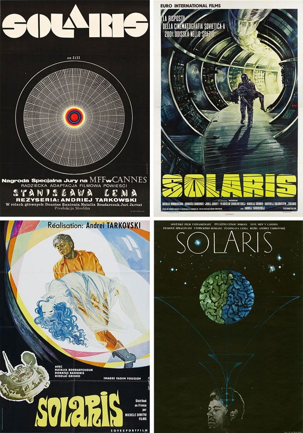
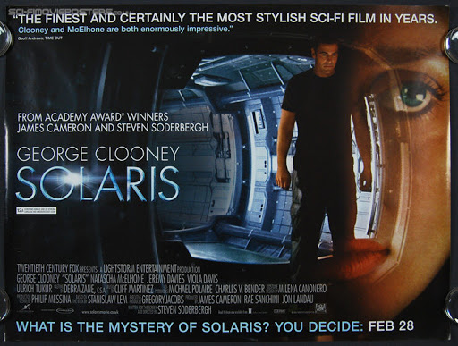

Влияние "Соляриса"
Сергей Лукьяненко в романе «Звёзды — холодные игрушки» делает упоминание о подобном живом океане: «…А была целая планета, имевшая разум. Океан разумной протоплазмы, с которым никто не смог установить контакт… и Алари получили приказ…».
-
«Солярис» (СССР, 1972) авторства Андрея Тарковского.
Широкоэкранный фильм из двух серий. Главные роли исполнили Донатас Банионис и Наталья Бондарчук. Обладатель специального Гран-при Каннского кинофестиваля. По результатам некоторых опросов входит в число величайших научно-фантастических фильмов в истории мирового кинематографа.
Экранизация романа Тарковским Лему не понравилась:
«Солярис» — это книга, из-за которой мы здорово поругались с Тарковским. Я просидел шесть недель в Москве, пока мы спорили о том, как делать фильм, потом обозвал его дураком и уехал домой… Тарковский в фильме хотел показать, что космос очень противен и неприятен, а вот на Земле — прекрасно. Но я-то писал и думал совсем наоборот. «Солярис» (США, 2002) — реж. Стивен Содерберг.
Эта экранизация также не вызвала у Лема восторга:
Содерберг сделал «Солярис» — я думал, что худшим был «Солярис» Тарковского… Я ничего не написал о том, что фильм мне нравится. Я не написал, что он мне не нравится. Это не то же самое. Знаете, добрый злодей это не то же самое, что злой добродей. Есть разница… Мне ведь не говорили, чтобы я соглашался, потому что заработаю денег, а только «вы не имеете понятия, какие технические возможности есть у Голливуда», и я поверил. Я не предполагал, что этот болван, извините, режиссёр, выкроит из этого какую-то любовь, это меня раздражает. Любовь в космосе интересует меня в наименьшей степени. Ради Бога, это был только фон. Но я всё-таки человек достаточно воспитанный. Поэтому не набросился на этого Содерберга, это не имеет смысла. У меня была стопка американских рецензий, и я видел, что все старались, потому что Содерберг известен, исполнитель главной роли очень известен, и поэтому на них не навешивали всех собак… Кроме этого, автору как-то не положено особо возмущаться, ну не положено.
Параллель между эфемерными созданиями Соляриса и произведениями искусства людей (которые в фильме представлены полотнами Брейгеля, копией Венеры Милосской, иконой Троицы, музыкой Баха, текстами «Дон-Кихота») выносит на поверхность вопрос о взаимоотношениях человека с его созданиями, в частности с кино как искусством репродуцирования реальности. В философских дискуссиях герои Тарковского обращаются к именам Толстого, Достоевского, Мартина Лютера, к произведению Гёте «Фауст», мифу о Сизифе, спорят с идеями Фридриха Ницше, не называя его по имени (монолог Криса «Проявляя жалость, мы опустошаемся…»). Предлагаемые режиссёром ответы радикальны. В отличие от большинства фантастических фильмов, которые противопоставляют человеческое и механическое начала как заведомо непримиримые противоположности, Тарковский обнаруживает между ними тайное родство[19]. На него намекают уже самые первые кадры фильма: загадочно колеблющиеся водоросли земного водоёма предвещают вечный водоворот океана планеты Солярис. Синтез земного и инопланетного достигает апофеоза в последней сцене фильма: в безбрежном океане Соляриса плывут острова, сотканные из памяти людей о Земле, и на одном из них Крис обнимает своего отца, принимая позу рембрандтовского блудного сына.